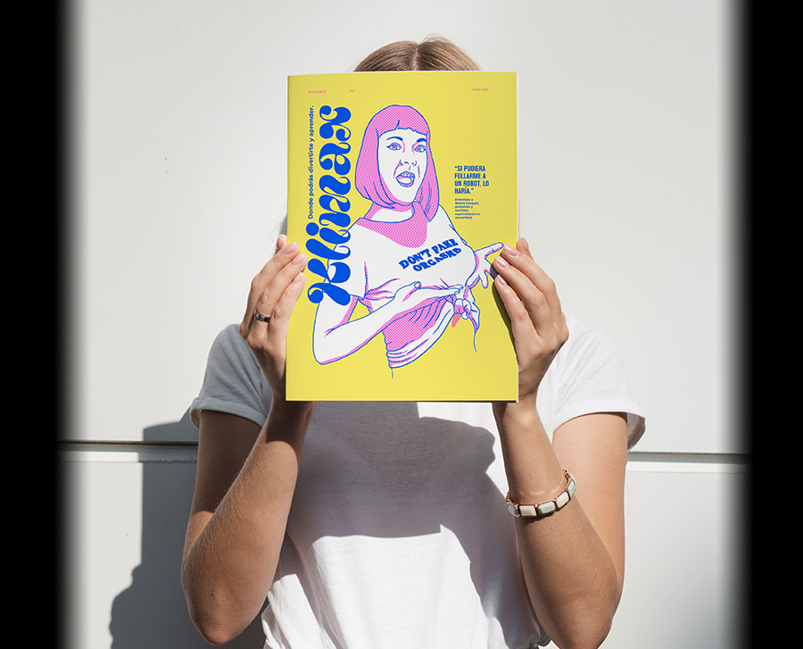
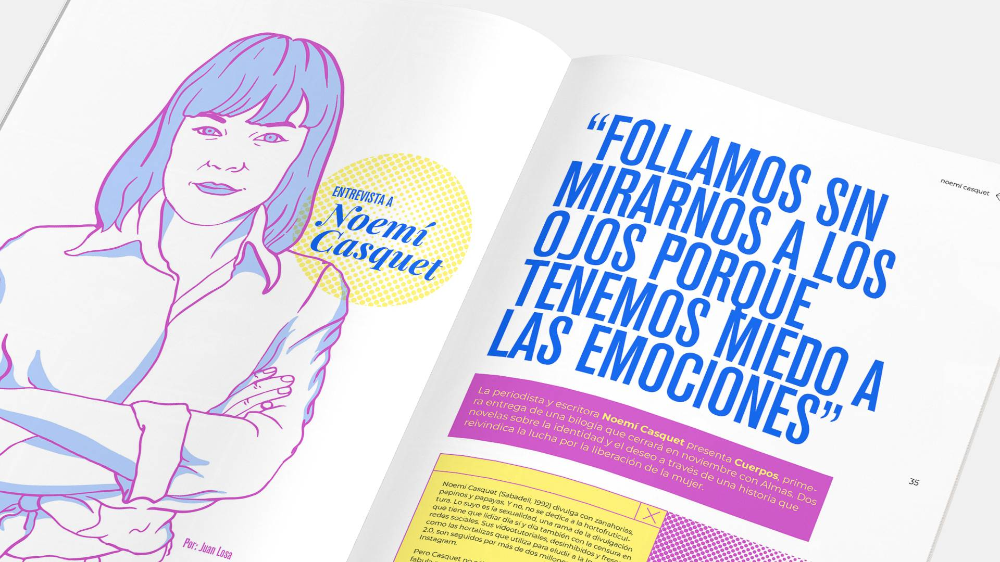
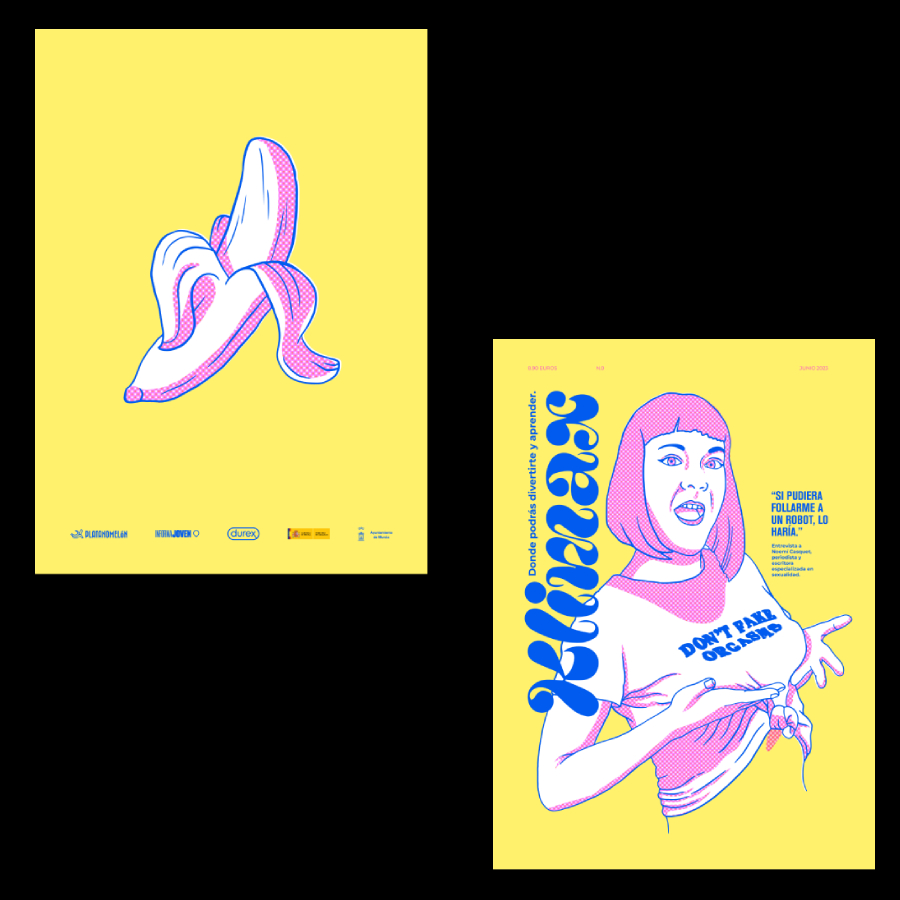
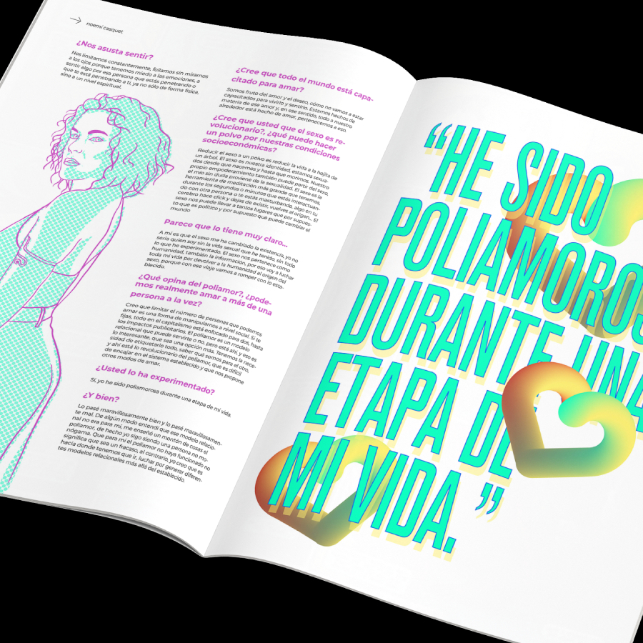
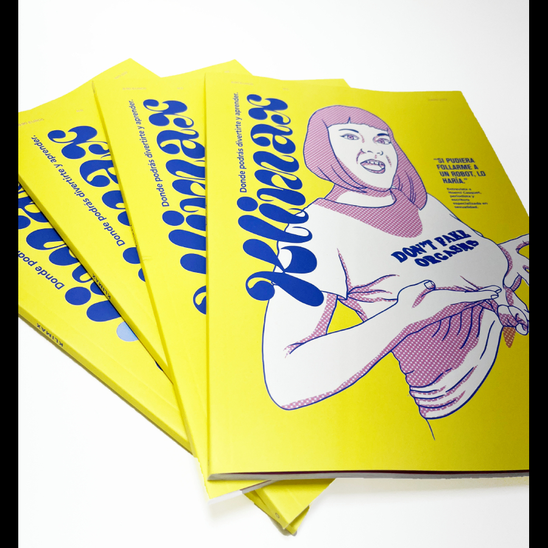
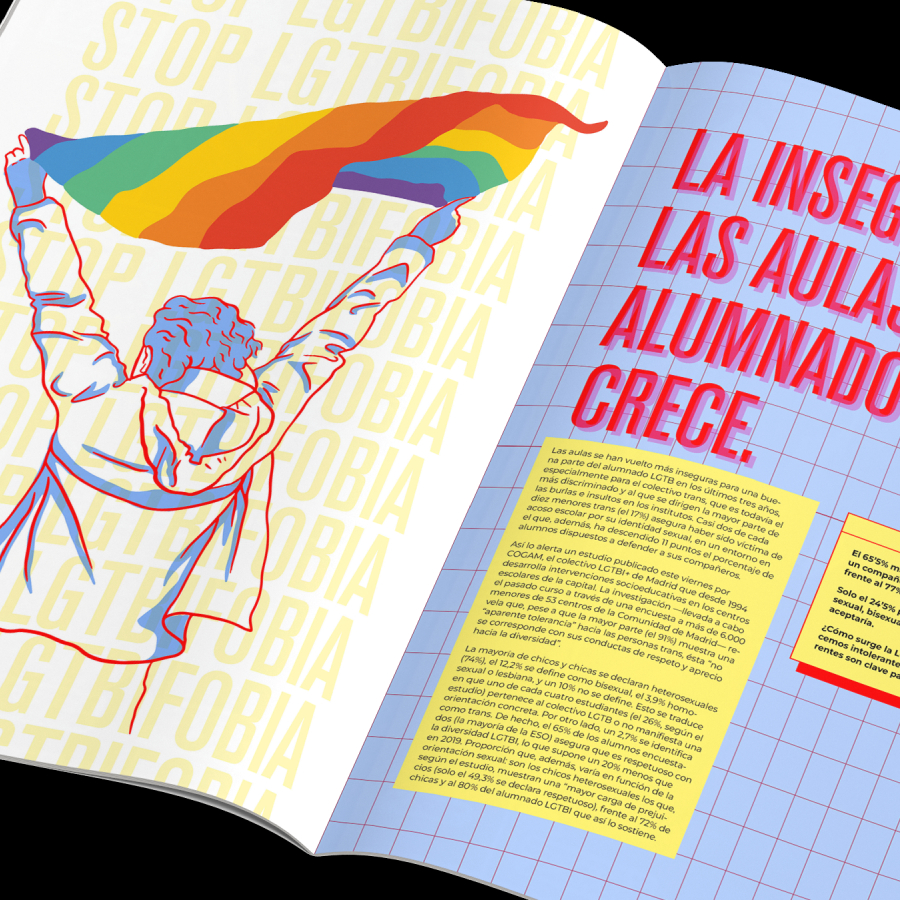
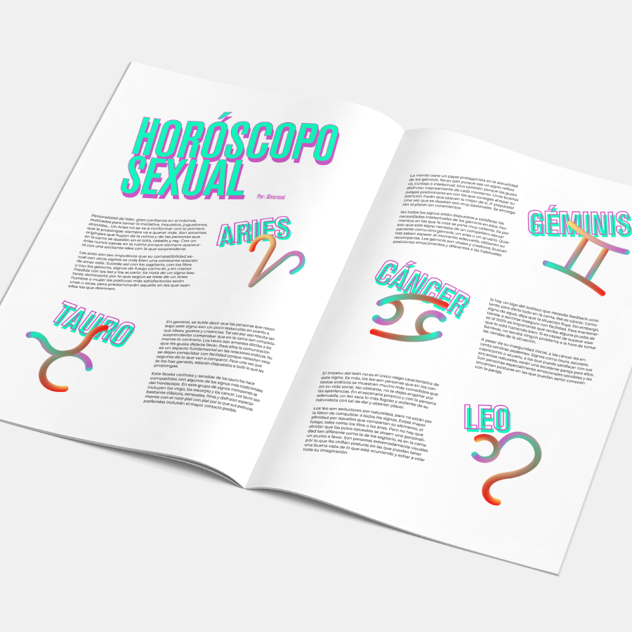
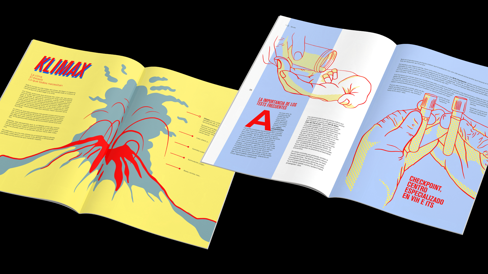

Desde la educación hasta la concienciación, Klimax es un proyecto que busca inspirar a las personas a tomar conciencia sobre su salud sexual, más allá de la edad y los tabúes.

Un proyecto muy especial para mí, ya que es el resultado de mi Trabajo Fin de Grado en Diseño Gráfico. Klimax es una revista sobre salud y educación sexual y contenido LGTB, que va dirigido a un público joven e inexperto.
Recogiendo datos reales y escalofriantes sobre ETS (Enfermedades de Transmisión Sexual) y embarazos no deseados, el proyecto busca ser un recurso educativo, pero también un punto de partida para romper tabúes y fomentar una conversación abierta sobre sexualidad.
En un mundo donde la información errónea y los tabúes siguen siendo un gran obstáculo para la educación sexual, Klimax se posiciona como una herramienta accesible, inclusiva y visualmente atractiva para empoderar a las personas a tomar decisiones informadas sobre su salud sexual.

Proceso de troquelado a mano sobre papel verjurado.

La portada de este proyecto fue dibujada a mano en Procreate y tratada con puntillismo posteriormente, con una paleta de colores atrevida y dinámica que capte rápido la atención de quienes la ven.

El interior tiene un diseño rompedor, estéticamente llamativo sin abandonar su funcionalidad. Los artículos de su interior están contrastados con datos reales con fines educativos.
En esta fase de investigación y briefing fue donde nació todo el proyecto. Mi espíritu y mis ganas por ayudar a los demás me hicieron decantarme por este proyecto. ¿La problemática real a cubrir? Un aumento escandaloso de ETS entre personas jóvenes y una LGTBfobia que no dejaba de crecer.
En esta fase, pasé de la investigación a las primeras ideas y feedback por parte de mi tutora de proyectos. Poco a poco el proyecto iría cogiendo la forma que tenía en mi cabeza desde el primer día.
Aquí puse en marcha toda la maquinaria, maquetación, artes finales, últimos toques al color... Y listo para llevar a imprenta.
Ya con el proyecto en las manos, tocaba defenderlo ante el tribunal, con toda la ilusión y preparación del mundo.




Resultado final del proyecto.